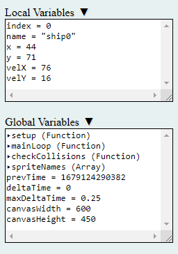
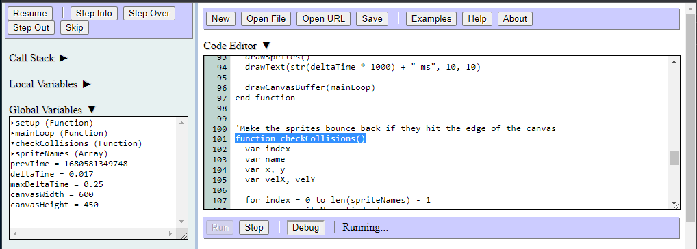
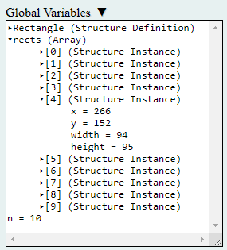

The variables displays list the names and values of all the currently declared variables. The locals display lists variables declared in the function that is currently selected in the call stack display. The globals display lists variables declared in the top-level code that are visible to the entire program:
Since function and structure definitions are stored in global variables, they are listed in the globals display. Clicking on a function definition will highlight the first line of code in that function:
Clicking on a structure definition, structure instance, or array will expand the item to show its elements:
